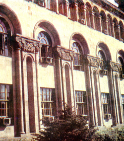

In[o|v undryxink a3s
undaniku ¦ a3s martovn1Xangaxa/ jardarabydagan
hamaliri masin qosylis hi,adagwovm e mia3n jardarabydu1
Pa3x [e| or wyr]inis hyd a,qadovm yn pazma;iw martig`
karda,nyr5nyrkin ¦ ardakin hartarmamp zpa.wo. martig1
Hajaq ynk anxyl cinov cor/arani go.kow5pa3x nov3nka|n
hajaq ynk ngadyl cinov garasnyri manrakantagnyrn ov 'okr
kantagnyru5oronk C¦orc
Apcar3ani a,qadanknyrn yn1 Ovrymn in[ov| [bydk
e badmyink da.antawor warbydi masin1Nra masin lsyl ym nra
ortov gno]ix5ori hyd a,qadovm e ma3rs5isg gynsacragan
'asdyr ¦ hydakrkir dy.ygov;3ovnnyr imanalov nbadagow
timyl ym nra ortovn` )nig
Apcar3ani 0cnov;3anu1
 |
ZROv#X
•
Ordy|. e /nwyl Warbyd C¦orcu5 in[by|s e ca.;yl1 6
Ha3rs /nwyl e !*(( ;waganin5 Ar¦md3an Ha3asdani
Gysaria ka.akovm1(
daryganovm na hor hyd p-novm e Zm3ov-nia3i
janabarhu1 A3sdy. e sgsovm zpa.wyl ir abaca
masnacidov;3amp1 Pa3x ta yrgar [i d¦ovm7sgswovm e
godora/u1 Nra undaniku k,wovm e Tyr6Zori
anabadnyru5 pa3x ha3rs o.] e mnovm5 kani or a3t
=amanag /a-a3ovm er ;ovrkagan panagovm1!(ªª
;waganin wyrata-novm e Zm3ov-nia1
•
Isg in[by|s e A;ynk
hasyl1
6 Mi 0r` /owa'in cdnwylis5 na ngadovm e5 or hyd¦ovm
yn iryn1 Anmi]abys nydwovm e /owu5 lo.alow hasnovm e
/owaqor,ix tovrs qarisq cxa/ fransiagan nawin1
Nawasdinyrix mygn 0cnovm e nran ;aknwyl5 isg nawu
yrgov 0rix ov..ov;3ovn e wyrxnovm tybi Hovnasdan`
A;ynk1 |
|
• Y|rp
e ha3rynatar2wovm1
6 A;ynkovm anxgaxra/ o.] =amanag na xangaxyl
e Ha3asdan cal !($ ;win pazma;iw ha3rynatar2nyri
hyd miasin Ha3asdan
e ygyl1
• Ordy|. e
cdnwyl 2yr dovnu1
6 Ha3asdan calovx hydo ha3rs abryl e Amir3an
'o.oxi pnagyli dnyrix mygovm1 Hydo ungyrnyrix mygi
a-a]argow dy.a'oqwovm e Arapgir` a3n =amanag
ka.aki ama3i /a3ramasu5 a3sdy. dnyr e ga-ovxovm1
Myr dovnu ha3rs er ga-ovxyl1
Xawok5 a3t dovnu hima [ga5 orowhyd myr
;a.amasovm tranx 'oqaryn par2raharg ,ynkyr yn
ga-ovxyl1 Arapgirovm nran 8kari asdwa/9 ein
go[ovm1 Na a-awodix yrygo a,qadovm er myr dan
pagovm anwyr] ;qg;qgaxnovm er` min[ kantagi
badrasd linylu1 |
•
In[by|s yk hi,ovm 2yr horu5 in[bisi|
pnaworov;3ovn ovnyr na1
6Na pari er5 saga3n` gobdaxa/1 Yn;atrovm eink5 or
kari hyd amyn0r3a ,'ovmn er gobdaxryl nra
pnaworov;3ovnu1 Pa3x nra my] ansahman syr gar5 sirovm
er ir cor/u5 yryqanyrin5 ka.aku1 Nra warbydov;3an ov
hmdov;3an masin e wga3ovm na a3s` na miagn er5 or
[ovnyr jardarabydi par2racov3n gr;ov;3ovn5 pa3x
jardarabydnyri miov;3an antam er1 |
 |
|  |
• Badmyk
2yr undaniki masin1
6 Im ma3ru nov3nbys Ar¦md3an
Ha3asdanix er5 ¦ na el5 hancamanknyri pyrovmow
Zm3ov-nia3ix A;ynk cnaxo. nawovm e y.yl1 Hydo ¦
ha3rs5 ¦ ma3rs /no.nyri hyd hasdadwyl yn Yr¦anovm1
Mi kani dari hydo5 yrp nranx amovsnov;3an masin harx e
a-a]anovm5 ma3rs ¦ nra /no.nyru hi,ovm yn a3n
d.a3in5 or irynx hyd gisyl er yrgar janabarhi ¦
daracir g3anki polor ta-nov;3ovnnyru1
• Ha3asdanovm
hasdadwylovx hydo 'or2y|l e cdnyl parygamnyrin5 ¦
art3ok ha]o.wy|l e1
6 Ha3rs mi kov3r e ovnyxyl5
orin 'or2yl e cdnyl1 Darinyr anx na namag e crovm
Py3rov;i ha3gagan ygy.yxovn ¦ oro, 'ndrdovkix hydo
cdnovm e kro]u1Sa my/ iratr2ov;3ovn er nra ¦ myz
hamar1
• <a|d
=a-ancnyr ovni C¦orc Apcar3anu1
6 My/ e myr cyrtasdanu1 Warbyd
C¦orcn ovni [ors yryqa` yryk a.]ig ¦ myg d.a5
dasnyrgov ;o- ¦ ksanyrgov /o-1 Myr undanikovm yryk
C¦orc ga5 oronk hawyr=axnovm yn babigi anovnu1
Polors cidynk nra gynsacrov;3ovnu5 a,qadanknyru5
jana[ovm ynk nra ungyrnyrin1 Pa3x nra arwysdu ,arvnagovm
e ;o-nyrix mia3n mygu` Sovrig Povnia;3anu` ngar[ov;3an
asbaryzovm1 |
 |
C¦orc Apcar3ani masin ,ad
ha.ortovmnyr yn y.yl hy-ovsdadysov;3amp ¦ -atio3ow5
pazma;iw hotwa/nyr yn dbwyl zanazan ;yr;yrovm ov
amsacryrovm1 Isg !(*( ;waganin nra a.]ga` 8Ar¦ig9
hradarag[ov;3an a,qagix Mari Apcar3an6Pyrpyr3ani
naqa2y-nov;3amp dbacrwyl e cirk6alpom` gynsacragan
dw3alnyrow ov Warbyd C¦orci arwysdi lawacov3n nmov,nyri
lovsangarnyrow1
Mynk [ynk waqynovm qosyl ha3dni
martganx masin5 oronx masin ,ad e qoswyl5 kani or
3ovrakan[3ovr harxazrov3x ¦ 3ovrakan[3ovr mart 3ovrowi
e paxaha3dovm da.antawor arwysdacydi pnaworov;3an
nrpyrancnyrn ov arwysdi 3ovr0rinag c/yru1
H7C7 Qosku
gyntani tar2nylovn myz 0cnyxin panasdy./ovhi Wiolyd
Cricor3anu ¦ ha3rs` panasdy./ Nyrsys A;apyg3anu1
!&)
tbrox |